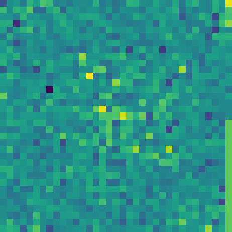

DepMap genes · accuracy
82.9%
± 1.2 percentage points
17,087 gene nodes · 4 dependency classes

Graph2Image · biological network cartography
Graph2Image builds a structural layout from network communities and a separate feature layout from correlations among node attributes, size-matches the two channels, and trains a vision model on the stacked representation.
This research page and its saved results are public. Uploading a graph opens a separate Google-authenticated workspace.
Held-out evidence
Mean ± standard deviation over five stratified node-level folds; every node is held out once.
DepMap genes · accuracy
82.9%
± 1.2 percentage points
17,087 gene nodes · 4 dependency classes
TCGA-BRCA WGCNA · accuracy
93.2%
± 0.3 percentage points
6,000 gene nodes · 5 co-expression modules
DepMap network validation
31.2×
CORUM co-complex enrichment
1,274 of 206,150 graph edges are co-complex pairs
Complete evidence map
Switch metrics to compare Graph2Image with the strongest matched baseline in every dataset discussed in the current manuscript. No saved chart image is used.
Structure-only accuracy, compared with random baselines of 11.1% and 1.9%.
Macro-AUROC when expression-derived tissue labels are replaced by independently curated functions.
Graph2Image used the complete Pan-Cancer network; baselines were down-sampled to 3.2M edges after exceeding 25 GB.
DepMap embedding clusters show the largest reported label agreement margin.
Method, in motion
Network communities define the structural layout, while correlations among node attributes independently define the feature layout. The size-matched channels are stacked for the classifier.
Edges encode relationships and each node carries measured attributes.
Nodes are grouped and color-coded before the global layout is compressed.
The independently constructed structural and feature layouts become distinct channels of one image.
The classifier trains on precomputed, fixed-size images.
Outputs remain tied to the aligned representation without implying causation.
Scalability, precisely stated
Graph2Image still pays a one-time graph construction and image-generation cost. After that conversion, the CNN trains on fixed-size node images, so classifier-stage memory does not grow with the retained edge set.
Biological findings
These are associations in the current analysis—not causal mechanisms or claims of clinical utility.
01 · DepMap genes
The DepMap graph shows a 31.2-fold enrichment for CORUM co-complex pairs. Four fully connected examples include the BRCA1–BARD1–BRCA2 DNA-damage complex III and the BRAF–MAP2K1–MAP2K2–YWHAE complex.
02 · TCGA-BRCA WGCNA
The module eigengene is positively associated with PAM50 Basal status (r = 0.678), independent Basal-like status (r = 0.517), and ER-negative status (r = 0.574), while showing an inverse association with Luminal A (r = −0.409).
Saved analyses
Curated, precomputed artifacts load immediately. Opening an example does not retrain a model or consume analysis compute.
Inspect the representation
Move between two real saved channels. Each retains its own learned spatial organization before the pair is stacked for the classifier.
DepMap Common Essential sample 14352 · feature channel

Paper
The BibTeX entry follows arXiv v1, as requested. The current manuscript has an expanded author list shown above.
Complex biological networks are fundamental to biomedical science, capturing interactions among molecules, cells, genes, and tissues. Deciphering these networks is critical for understanding health and disease, yet their scale and complexity represent a daunting challenge for current computational methods. Traditional biological network analysis methods, including deep learning approaches, while powerful, face inherent challenges such as limited scalability, oversmoothing long-range dependencies, difficulty in multimodal integration, expressivity bounds, and poor interpretability. Here, we present Graph2Image, a framework that transforms large biological networks into sets of two-dimensional images by spatially arranging representative network nodes on a 2D grid. This transformation decouples the nodes as images, enabling the use of convolutional neural networks with global receptive fields and multi-scale pyramids, thus overcoming limitations of existing biological network analysis methods in scalability, memory efficiency, and long-range context capture. Graph2Image also facilitates seamless integration with other omics modalities and enhances interpretability through direct visualization of node-associated images. When applied to several large-scale biological network datasets, Graph2Image improved classification accuracy by up to 26.2% over the strongest graph neural network baseline. Beyond predictive performance, Graph2Image generated interpretable attributions that captured biologically and therapeutically relevant cancer dependencies, distinguishing cancer-differentiating genes from housekeeping genes. Applied to breast cancer networks, Graph2Image identified a co-expression module associated with basal-like breast cancer and linked it to genes currently being pursued as therapeutic targets. The proposed approach scales linearly with graph size, whereas conventional graph neural networks require iterative message passing over the graph, resulting in substantially higher computational costs for large networks. Graph2Image thus provides a scalable and interpretable approach to biological network analysis that enables the identification of disease-relevant targets and the mechanistic study of complex biological systems.
@article{mostafa2025graph2image,
title = {Transformation of Biological Networks into Images via Semantic Cartography for Visual Interpretation and Scalable Deep Analysis},
author = {Mostafa, Sakib and Xing, Lei and Islam, Md. Tauhidul},
journal = {arXiv preprint arXiv:2512.07040},
year = {2025},
doi = {10.48550/arXiv.2512.07040},
url = {https://arxiv.org/abs/2512.07040}
}Your data
The private workspace validates separate feature, label, and edge files; reports held-out node-classification performance; and computes Kernel SHAP as a separate explanation step. Google authentication is required.
Graph2Image is a research method. Results shown here are dataset-specific evaluations, not evidence of clinical validity, clinical utility, or external transportability.
Model attribution describes what influenced a prediction. It should not be interpreted as a biological mechanism or causal effect.
Current manuscript team
The team below follows the author list and affiliations in the current manuscript.
Department of Radiation Oncology
Stanford University
Radiation Oncology · Stanford Cancer Institute · Institute for Stem Cell Biology and Regenerative Medicine
Department of Medicine
Division of Oncology
Radiation Oncology · ICME · Electrical Engineering
lei@stanford.eduDepartment of Radiation Oncology
Islam Lab